Hello! For this project, I colorized the Prokudin-Gorskii photo collection. I did so by extracting the RGB channels from the images and cropping them to remove the outer 15% to remove black borders. Afterwards, I In addition, I used a Sobel Filter for edge detection on each channel to help find the shifts that align the image. Lastly, I cropped the aligned images to be the same size before merging all three color channels for the final image. One of the problems I faced while implementing this algorithm was how the Emir image looked unaligned after I tried to align the images without Sobel Filters. To fix this, I added Sobel Filters to my algorithm to obtain more accurate offsets and detect edges for better image alignment. To find the optimal alignment shifts for the red and green channels relative to the blue channel, I maximized NCC score. The NCC score measures the similarity between two images and both pixel intensity and structure into account. The results of my algorithm on the example images and the image I chose from the Prokudin-Gorskii photo collection are shown below:
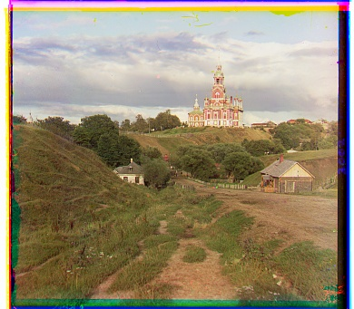
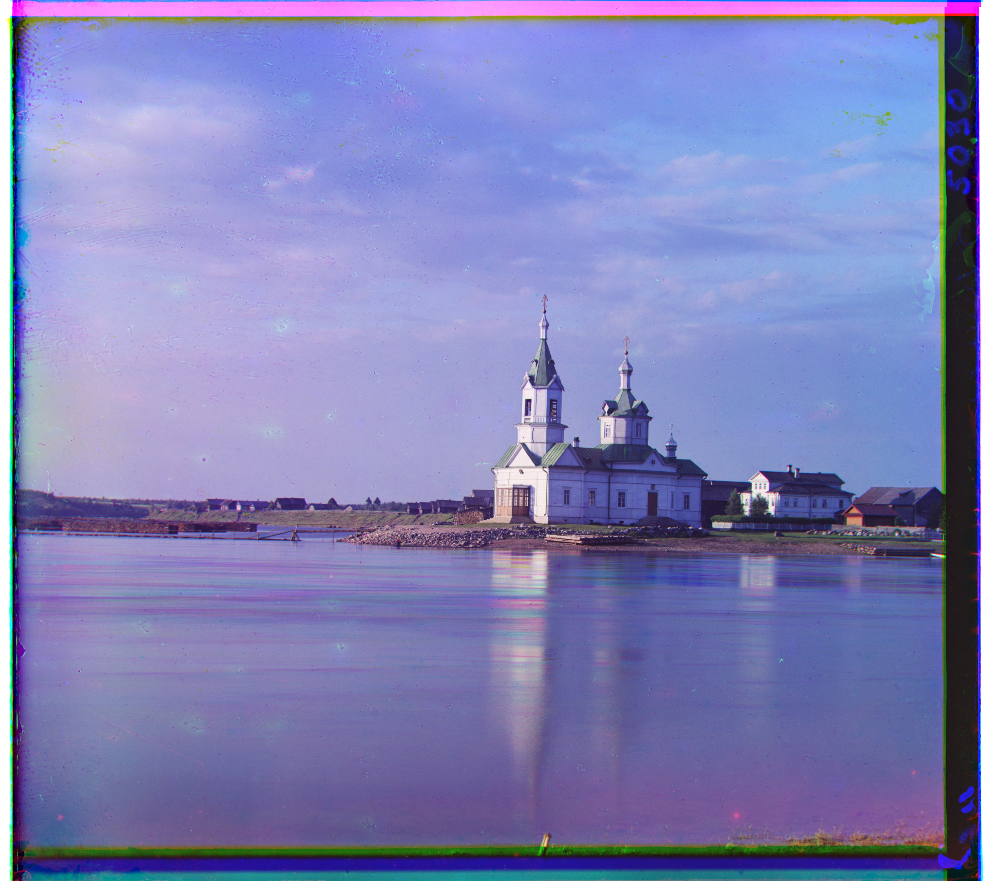
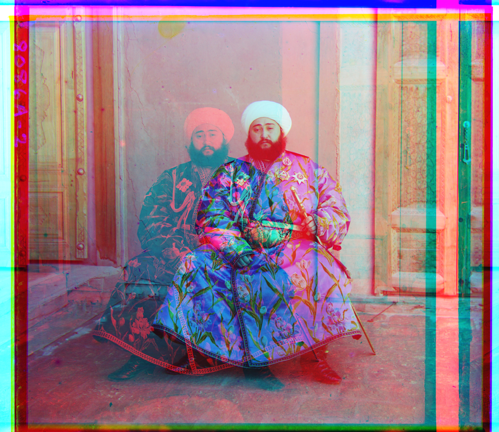
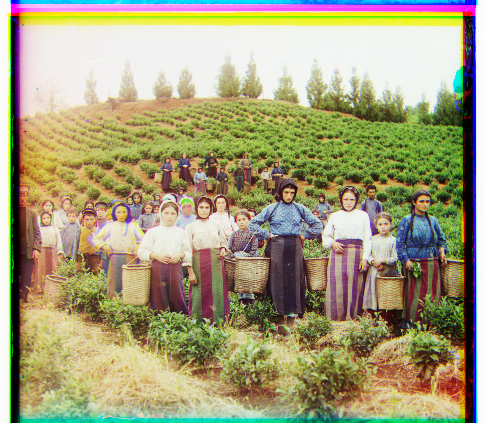
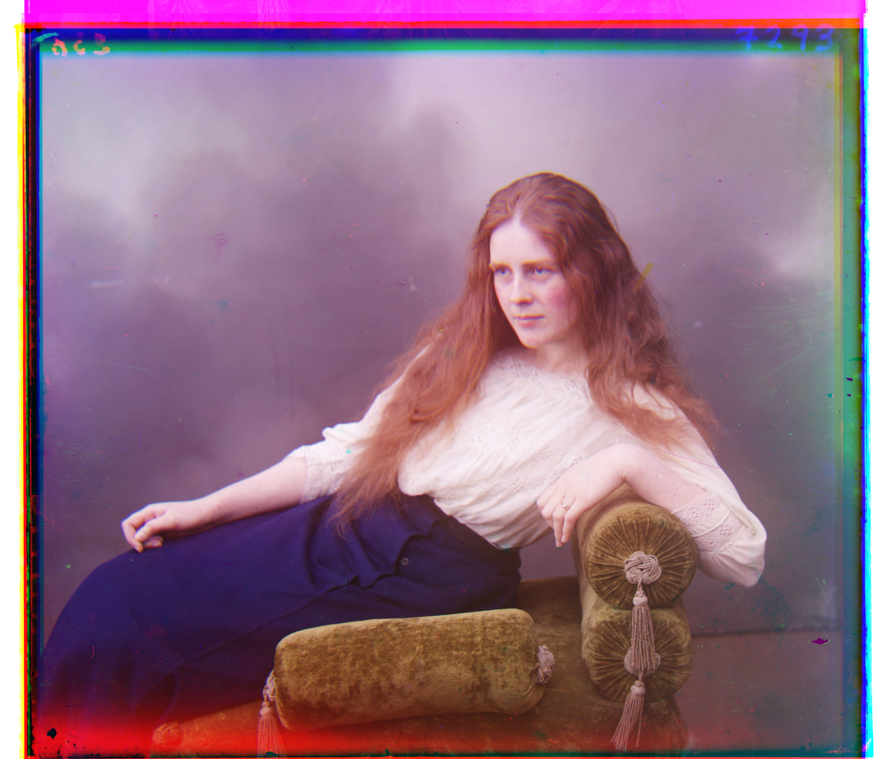
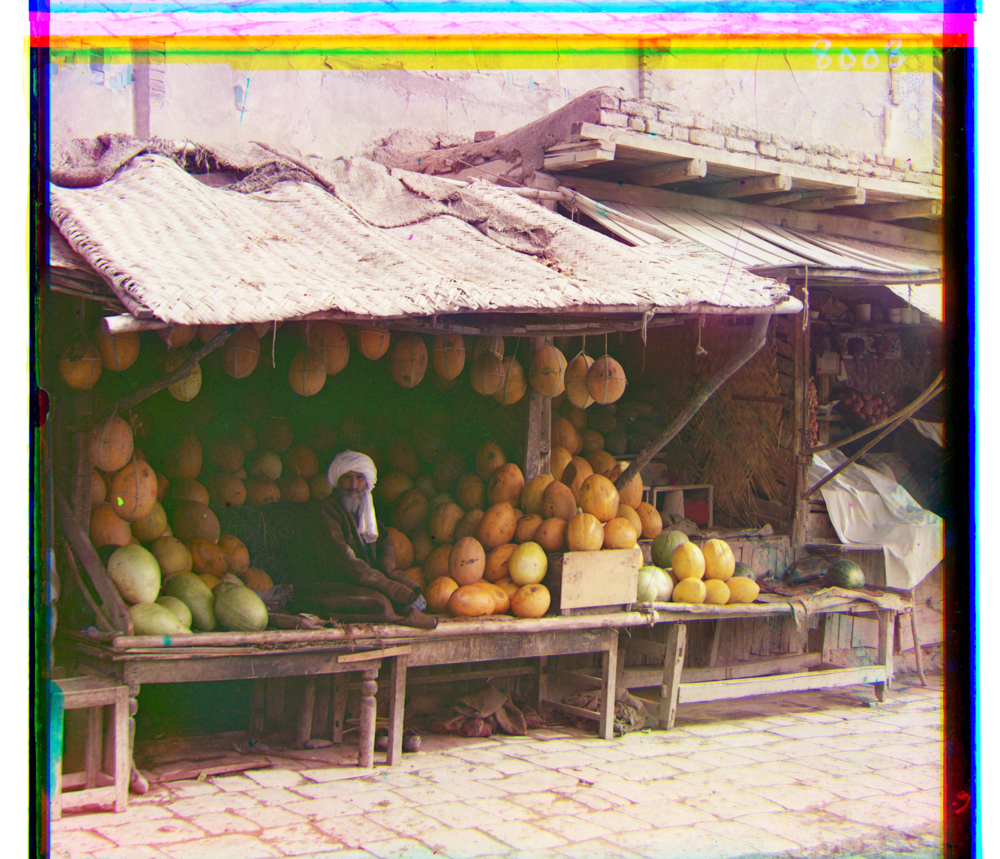

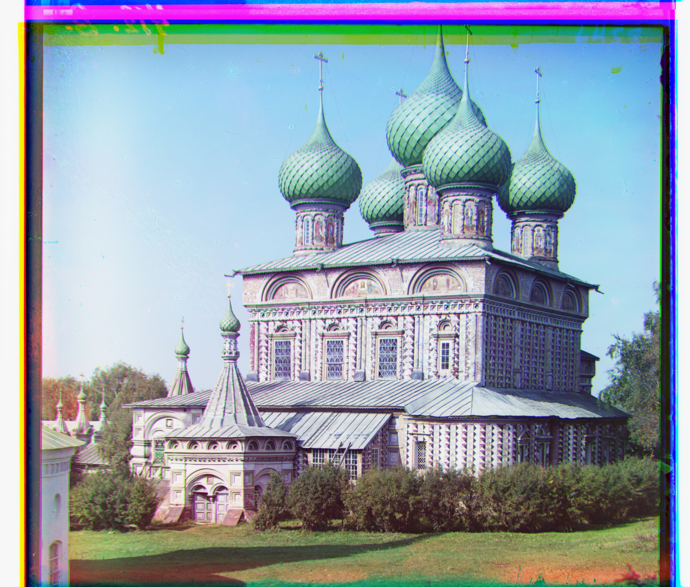

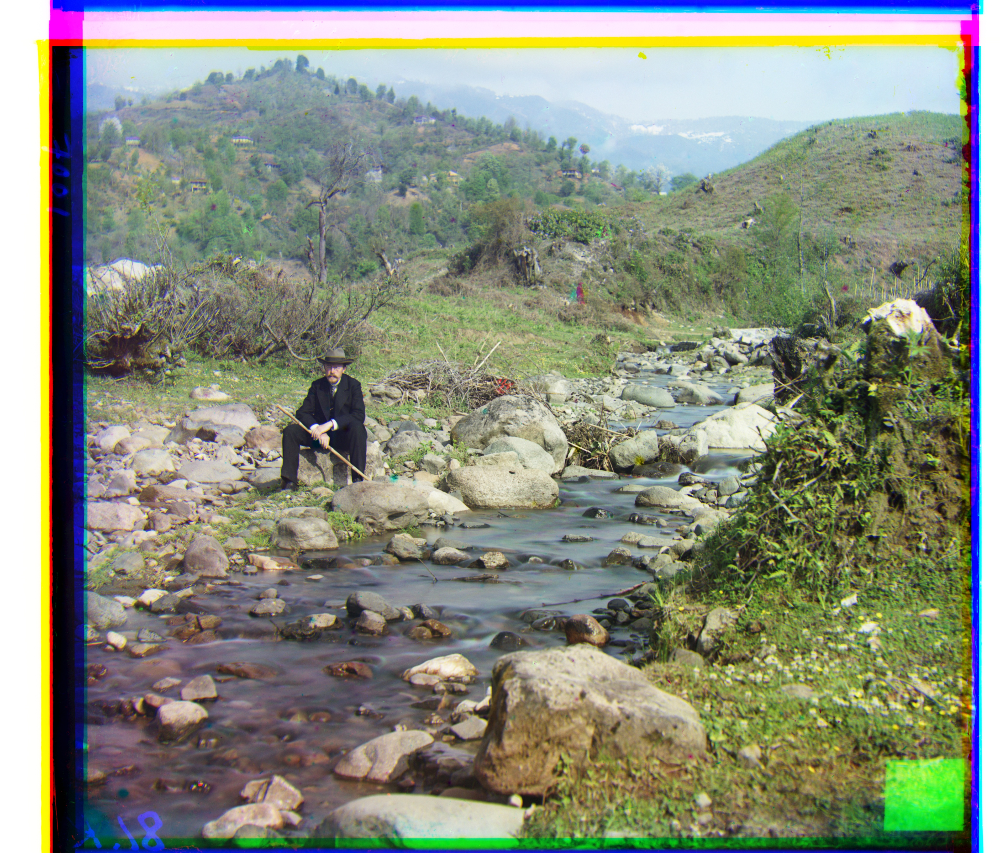
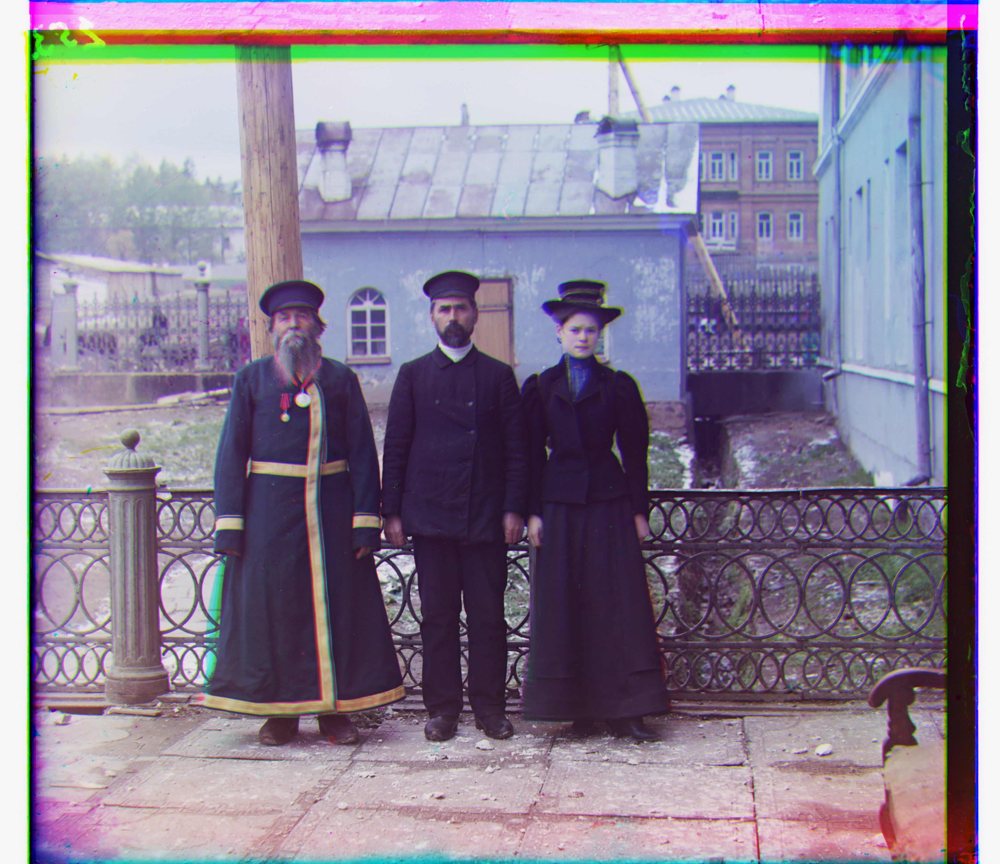
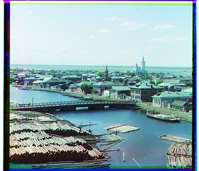
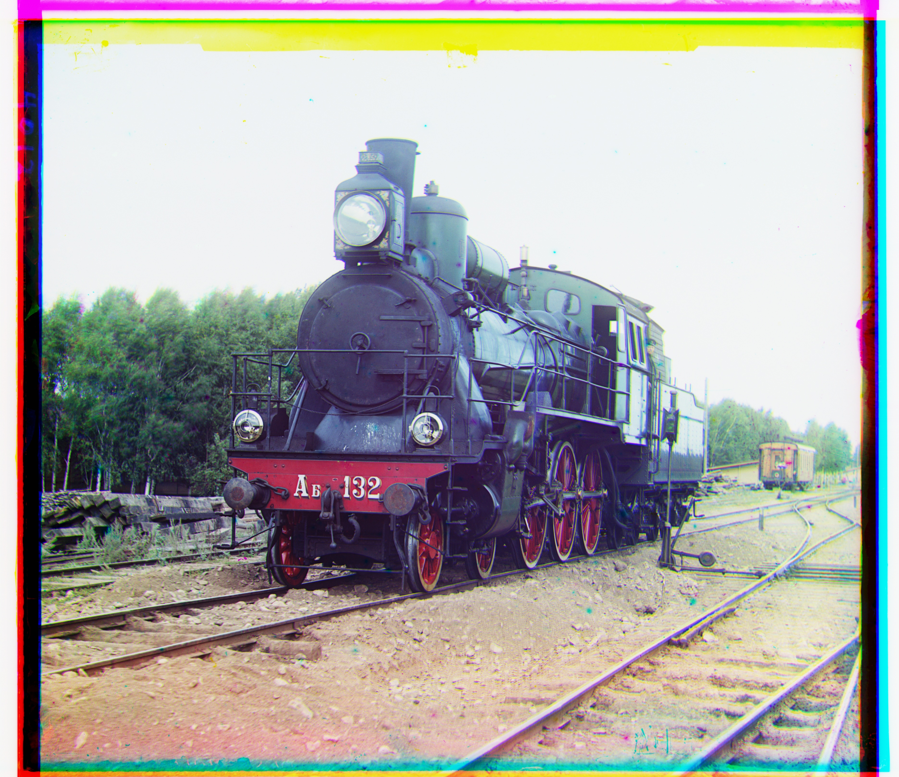
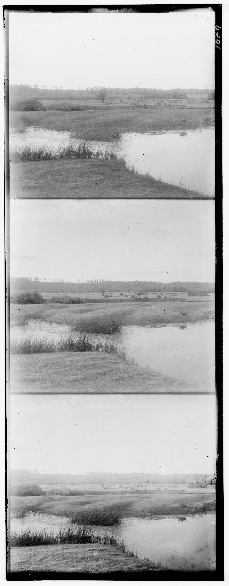
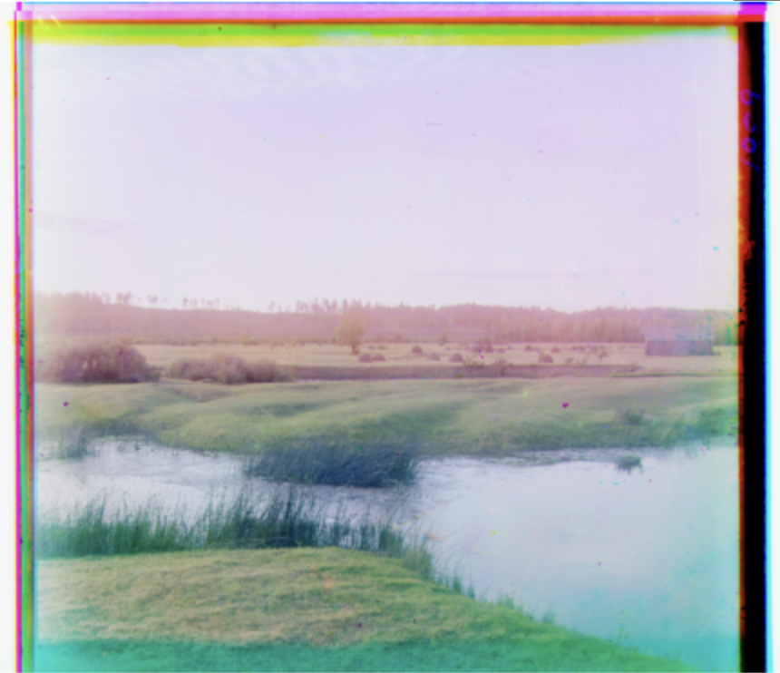
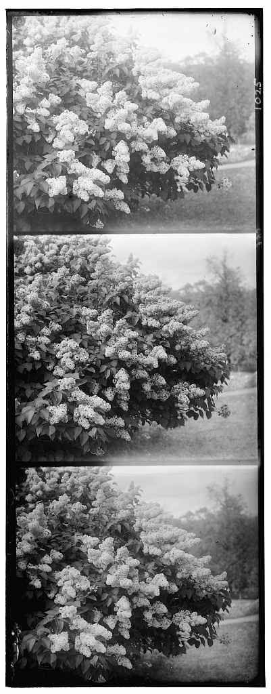
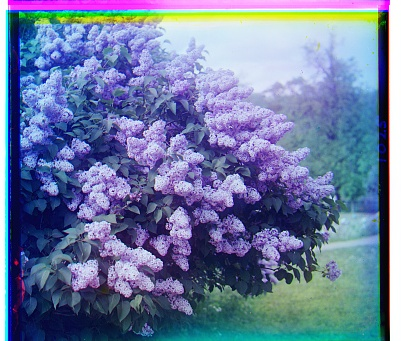